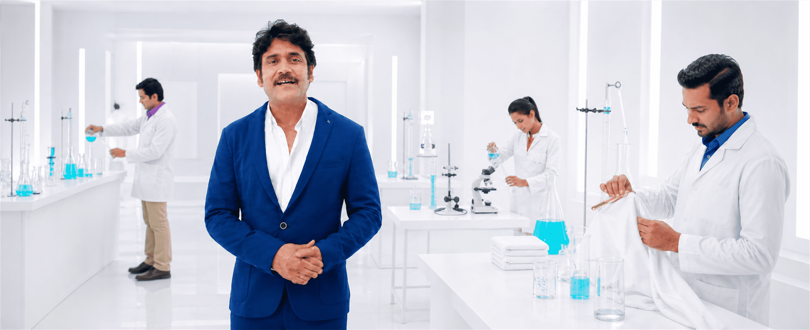

The audience needed more than a cleanliness claim; the film had to demonstrate care, testing and product confidence.
← Back to workCleaning put to the test.
Ghadi · Detergent Film
Cleaning put to the test.
Trust made visible.

Project overview
A familiar promise.
Backed by visible rigour.
Detergent performance is judged in everyday homes, but confidence grows when viewers can see the work behind the clean. The film brings Ghadi into a bright research environment where fabric care becomes demonstrable.
A presenter-led structure keeps the science approachable while tests, cloth and product evidence make the cleaning story tangible.
- Format
- Product Film
- Brand
- Ghadi
- Core Thought
- Tested Performance
- Visual World
- Bright Laboratory
The product film
From claim.
To cleaning evidence.
The film turns laboratory activity into consumer reassurance, balancing technical credibility with the directness and accessibility of a household brand.
The challenge
Make science credible.
Keep the language familiar.
Laboratory detail needed to support the story without turning an everyday detergent message into a technical lecture.
The narrative system
Introduce. Demonstrate.
Reassure.
- 01
Lead clearly
A confident presenter establishes the question and guides viewers through the proof.
- 02
Show the test
Fabric, liquid and laboratory action make detergent performance visible on screen.
- 03
Return to trust
The evidence resolves into an accessible reason to choose the brand.
The visual language
White for clarity.
Blue for confidence.
An immaculate laboratory creates hygiene and precision. Royal blue gives the presenter authority, while restrained cyan liquids turn cleaning action into a recognisable visual cue.
The film craft
Performance explained.
Confidence retained.
Presenter authority
A direct-to-camera guide keeps technical information conversational.
Fabric evidence
Visible cloth tests connect laboratory activity to the consumer’s real concern.
Clinical staging
Controlled white space makes every action clean, legible and credible.
Focused pacing
Demonstration beats move quickly enough to maintain product-film energy.
The outcome
A household product.
A stronger performance story.
The film gives Ghadi’s value proposition a more visible foundation and turns testing into a simple, memorable reason to believe.
Visible proof
Cleaning is demonstrated through action rather than asserted through copy alone.
Accessible science
Laboratory cues add authority without overwhelming the audience.
Brand trust
Presenter, process and product resolve into one confident message.
Tested with rigour.Trusted at home.
Have a product promise that deserves visible proof?